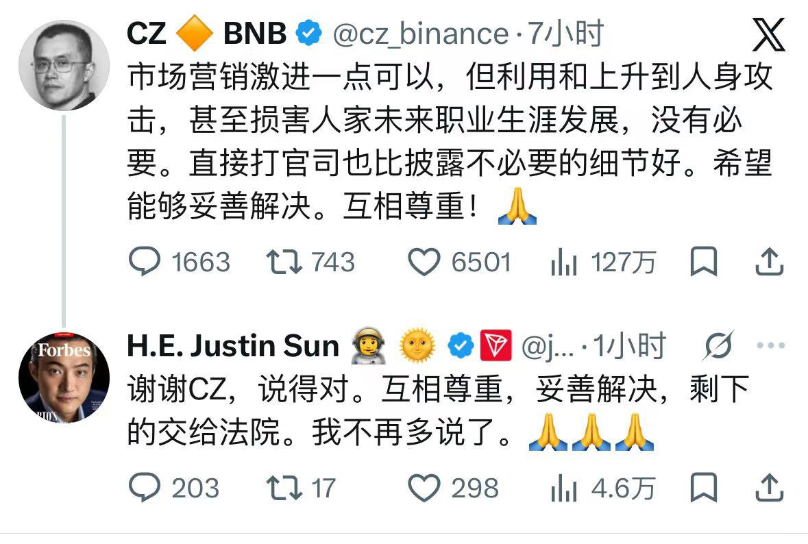
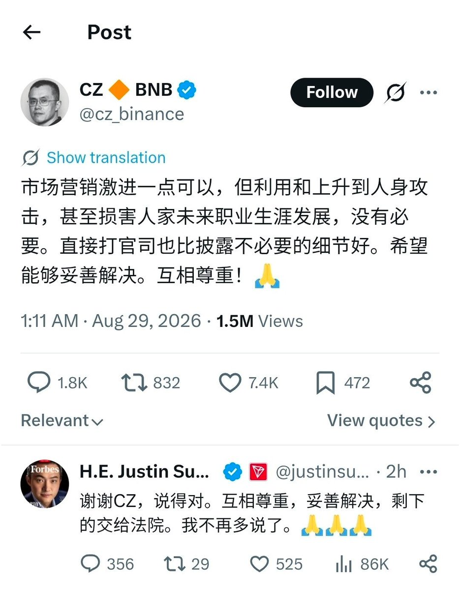

洛铃🦊Magic Caster
@LolingVerse
@yaoguaibnb


妖怪｜web3猎手
@yaoguaibnb
感觉孙哥挺怕张长鹏的，
长鹏今天早上批评了孙哥，孙哥立马向大哥表态会按照大哥的思路来做事，感觉币圈的党委书记是赵长鹏，圈长是孙哥 https://t.co/NRPKw02DzL
洛铃🦊Magic Caster
@LolingVerse
币圈两大顶级收割机，冷不丁在全网围观下演起兄友弟恭的赛博道德模范大戏。
CZ 一副德高望重的老大哥架势公开敲打“做人留一线”，孙割转头就双手合十连发三个祈祷符号秒变懂事后生，齐刷刷把下三路炒作与公关太极打得滴水不漏。 https://t.co/ndIY7IbxNU